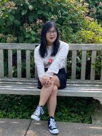
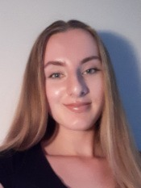

who-we-are
The Brain and Behavioral Dynamics Lab, part of the Psychology Department at Penn State, is looking for research assistants to study brain development in infants, children, and adolescents for Fall 2023. You can earn research project (PSY 494) credit or work study funds, and learn video, computer, and communication skills. Prior research experience and computer skills are a plus, but aren’t required. We are especially interested in students who have morning availability, computer skills, or are interested in developing skills in advertising, marketing, or public relations. You may apply by completing an application. We are FULL for Fall 2023 and Spring 2024
Lab Director

Rick O. Gilmore is Professor of Psychology, a Huck Institute of the Life Sciences faculty member, and an Associate of the Institute for Cyberscience. He earned his bachelor’s degree magna cum laude in Cognitive Science from Brown University, and master’s and doctoral degrees in Psychology from Carnegie Mellon University where he participated in the Center for the Neural Basis of Cognition (CNBC) training program in cognitive neuroscience. Gilmore’s research focuses on the development of visual perception and memory. He is particularly interested in the development of brain networks that enable perceivers to extract information about the layout of the environment, the shape of objects, and the speed and direction of self-movement from patterns of visual motion called optic flow. Gilmore is also keenly interested in developing tools and practices that make scientific research more open, transparent, and reproducible. He is co-founder and Co-Director of the Databrary.org data library, and is co-PI on the Play & Learning Across a Year (PLAY) Project. From 2008 to 2014, Gilmore served as the founding Director of Human Imaging at Penn State’s Social, Life, and Engineering Sciences Imaging Center (SLEIC). He has won the College of the Liberal Arts tenure-line faculty teaching award, leads the Open Data in Developmental Science (ODDS) initiative for the Penn State Child Study Center, and has had support for his research from the National Institutes of Health and the National Science Foundation.
Gilmore has served as president of the Centre Region Bicycle Coalition, the Acoustic Brew Concert Series, and the State College Community Theatre. An active radio amateur or ham (callsign W3TM), he is member of the Board of Directors of the Nittany Amateur Radio Club and is the faculty adviser and K3CR license trustee for the Penn State Amateur Radio Club.
Contact Information
114 Moore Building
Department of Psychology
The Pennsylvania State University
University Park, PA 16801
814-865-3664, voice
814-863-7002, fax
rogilmore AT-SIGN psu DOT edu
Current Staff
Andrea Seisler, Lab Manager

Andrea R. Seisler is the Laboratory Manager of the Brain and Behavioral Development Laboratory directed by Dr. Rick O. Gilmore. She has also been the Support and Authorizations Specialist at Databrary since November 2016. She received her bachelor’s and master’s degree in Biomedical Engineering from The Catholic University of America. During her graduate studies, she was a recipient of the Clare Booth Luce Fellowship award.
She completed MRI based neuroscience and orthopedics research while working at The National Institutes of Health from 2001-2007. After her move to State College, she served as an IRB Compliance Coordinator for the Human Research Protection Program at Penn State and then moved on in 2009 to manage the Human Electrophysiology Facility located at the Social, Life, and Enginineering Sciences Imaging Center through 2014.
She is active in Scouts BSA as a Committee Member in Troop 245 and an Executive Board Member of the Juniata Valley Council, BSA. She completed her Wood Badge leadership training course in September 2020 and was a Troop Guide on staff in the Spring of 2022. She has been the Assistant Scoutmaster of Administration for National Youth Leadership Training since 2021. In addition she enjoys dancing ballet and teaching at Dance Academy.
Contact Information
503 Moore BuildingDepartment of Psychology
The Pennsylvania State University
University Park, PA 16802
ars17 AT-SIGN psu DOT edu
Molly Askin, Undergraduate Research Assistant

Molly Askin is a junior at the Pennsylvania State University and is from New Jersey. She is majoring in Psychology with the Neuroscience option with a minor in neuroscience. She is involved in campus through Greek life in her sorority Alpha Xi Delta. She is also involved in THON as an assistant THON chair which consists of helping with anything the other THON chairs need help with as well as helping to raise money for THON. She is interested in pursuing her education further and eventually getting her PhD in neuropsychology with hopes to eventually study patients with Alzheimer’s and dementia.
Bruna Baldivieso, Undergraduate Research Assistant

Brianna Beamer, Undergraduate Research Assistant

Nicole Cruz, Undergraduate Research Assistant

Julia DiFulvio, Undergraduate Research Assistant

Clara Eroles, Undergraduate Research Assistant

Ysa Fernandez, Undergraduate Research Assistant

Ysa Fernandez is a senior at Penn State pursuing an undergraduate degree in Psychology with a minor in Child Maltreatment and Advocacy Studies. They are a resident assistant and an undergraduate research assistant for the Cognition, Affect, and Temperament Lab. Ysa’s main research interests include measuring the association between household chaos and caregiving affecting child development, and how environmental stressors can lead parents to adopt stricter behaviors with less sensitivity. They plan to pursue and eventually obtain their PhD in developmental psychology with hopes of exploring their interests even further. In their free time, they like to make music, go bouldering, and forage for mushrooms.
Oriana Franco, Undergraduate Research Assistant
Oriana Franco is a Penn State University student, pursuing a psychology major. She is intended to graduate in the spring of 2026 and further her education by pursuing a Ph.D. in Neuroscience or Computer Science. Her hobbies consist of reading, hiking, running, and playing with her dog and cat. Oriana’s interest in developmental psychology has led her to find Dr. Gilmore’s lab and become a part of it. Her proficiency in English and Spanish opened many doors for her to communicate with many individuals without barriers. Oriana’s passion for helping people has put her on a path to further her knowledge on things such as mental illness, in the hopes of later on in her life being able to use that knowledge to guide others.
Madison Gehringer, Undergraduate Research Assistant

Madison Gehringer is a junior at Penn State pursuing an undergraduate degree in psychology with a focus in neuroscience as well as a minor in biology. She is a member of the National Society of Leadership and Success at Penn State. Madison is interested in studying brain damage and mental illness, her interest in the brain led her to become apart of Dr. Gilmore’s lab. In her free time she enjoys baking, drawing and listening to music. Madison is an avid animal lover and when she is not at Penn State she works as an animal technician at the Montgomery County SPCA Perkiomenville location.
Peter Huang, Undergraduate Research Assistant

Yinghe Liu, Undergraduate Research Assistant

Sydney (Belle) Peterson, Undergraduate Research Assistant
|
Belle Peterson is a junior at the Pennsylvania State University from Northern California. She is majoring in Bio-Behavioral Health, with minors in Neuroscience and Biology. She is the co-founder of an artificial intelligence-based start-up, Apoio, which focuses on improving the intake process for mental health providers and providing greater access to care for patients. She is also involved with Alpha Phi Omega and Remote Area Medical, both student-run community service groups. Belle plans to attend medical school after matriculation to specialize in pediatric and adolescent medicine. In her free time, Belle enjoys swimming, baking for her roommates, and white-water rafting.
Recent Alumni
- Yiming Qian, Ph.D.
- Cecelia Petrarca
- Kayla Moninger
- Kavya Jhaveri
- Bowen Deng
- Anjali Jivan
- Maureen Burke
- Sara Delmoral
- Kymberle Shields
- Shahir Rayes
- Michelle Mendez
- Rachel Chang
- Anna Capria
- Emily Herman
- Chelsea Davis
- Sandy Rayes
- Luka Kelly
- Amar Bhatia
- Zhichun Zhao
- Sarah Shahriar
- Ashton Dluzneski
- Alyssa Pandos
- Charmi Mehta
- Michael Dexheimer
- Hifzah Malik
- Raya Willoughby
- Katie Torres
- Shivani Patel
- Michael O’Neill
- Daved Fared
- Auburn Lattanzio, Graduate student, Villanova University
- Michelle Shade
- Sam Pai
- Jun Oh, Apprentice Ruby on Rails Developer, Launch Academy, Inc.
- Amanda Thomas, Ph.D.
- William Adamiak
- Shivam Vedak, MBA, MD
- Dan Elbich, Graduate student, Penn State
- Jeremy Fesi, Ph.D., Research Analyst, U.S. Marine Corps
- Lorena Gonzalez, Graduate student, Penn State
- Ricky Groner, IT Support Specialist, Huck Institutes of the Life Sciences, Penn State
- Ken Hwang, Consultant, Anexinet
- Matthew Lee, MBA student, Penn State
- Patricia Jones, Optometry student, Pennsylvania College of Optometry